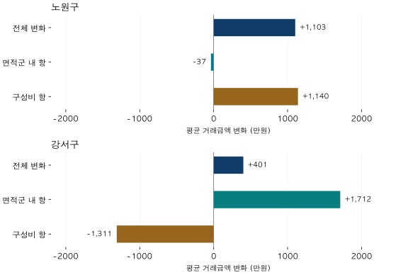

첫 집을 위한 가격 읽기 · 2 / 4
평균 거래가격이 올랐는데, 같은 집도 올랐을까?
2026년 5~6월 노원구·강서구 실거래로 평균가격 변화와 면적군 거래 구성 변화를 나눠봅니다. 평균 상승을 같은 집의 상승으로 읽기 전에 확인할 기준입니다.
분석 기간 · 2026년 5~6월 계약 | 보유 자료 스냅샷 생성 · 2026-10-04
“평균 거래가격이 올랐다”는 말을 들으면 내가 보고 있는 집도 비싸졌다고 생각하기 쉽습니다. 하지만 이번 달에는 지난달보다 큰 집이 더 많이 거래됐을 수도 있습니다. 평균은 집의 가격뿐 아니라, 어떤 집이 거래됐는지에도 반응합니다.
1편에서는 같은 달의 두 지역을 비교하기 전에 면적을 맞췄습니다. 이번에는 같은 지역의 5월과 6월을 비교합니다. 한 달 사이 바뀐 것은 가격일까요, 거래된 집의 구성일까요?
1. 평균과 중앙값은 서로 다른 요약입니다
평균 거래가격은 거래금액을 모두 더한 뒤 건수로 나눈 값입니다. 비싼 거래 한 건도 총액에 그대로 들어갑니다. 중앙값은 금액을 순서대로 놓았을 때 가운데에 해당하는 값입니다. 짝수 건이면 가운데 두 값의 평균을 씁니다. 둘 중 하나가 늘 정답인 것은 아닙니다.
5억 원짜리 집과 10억 원짜리 집의 가격이 그대로라고 가정해 보겠습니다. 첫 달에는 5억 원 집이 8건, 10억 원 집이 2건 거래되면 평균은 6억 원, 중앙값은 5억 원입니다. 다음 달에 각각 2건과 8건이 거래되면 평균은 9억 원, 중앙값은 10억 원이 됩니다.
두 종류의 집값은 그대로인데, 거래 구성만 바꿔도 두 통계가 모두 오릅니다. 중앙값을 사용한다고 구성 변화가 사라지는 것은 아닙니다.
이 예시는 평균이나 중앙값을 믿지 말자는 뜻이 아닙니다. 두 숫자는 해당 기간에 거래된 집들을 잘 요약할 수 있습니다. 다만 “거래된 집들의 금액이 어떻게 달라졌나?”와 “동일한 집의 가치가 어떻게 달라졌나?”는 다른 질문입니다.
2. 실제로 두 지역의 평균은 모두 올랐습니다
1편과 같은 서울 노원구·강서구에서 전용 17·18평형과 25·26평형 두 묶음만 골랐습니다. 아래의 ‘합산’은 이 두 면적군을 합쳤다는 뜻이며, 구 전체 면적의 거래를 모두 포함한 평균이 아닙니다. 같은 정제 조건으로 2026년 5월과 6월 계약을 비교했습니다.
| 지역 | 5월 평균 | 6월 평균 | 평균 변화율 | 중앙값 5월 → 6월 |
|---|---|---|---|---|
| 노원구 | 74,573368건 | 75,676301건 | +1.48% | 70,000 → 72,000 |
| 강서구 | 101,001280건 | 101,402188건 | +0.40% | 95,000 → 98,000 |
평균은 만원 단위로 반올림했습니다. 변화율은 반올림 전 값으로 계산했습니다. 중앙값은 두 면적군의 개별 거래를 합쳐 계산했으며, 두 중앙값을 평균한 값이 아닙니다.
노원구 평균은 약 74,573만 원에서 75,676만 원으로, 강서구는 약 101,001만 원에서 101,402만 원으로 올랐습니다. 중앙값도 두 지역 모두 올랐습니다. 여기까지만 읽으면 “두 곳 다 같은 방향이구나”라고 생각할 수 있습니다.
면적군을 나누면 더 많은 정보가 보입니다. 노원구의 작은 면적군 평균은 올랐지만 큰 면적군 평균은 내렸습니다. 강서구에서는 두 면적군 평균이 모두 올랐습니다. 이 역시 각 면적군에서 거래된 집들의 평균 변화입니다.
| 지역 · 계약월 | 전용면적군 | 거래 수 | 평균 | 중앙값 |
|---|---|---|---|---|
| 노원구 · 5월 | 17·18평형 | 216건 | 64,789 | 60,000 |
| 노원구 · 5월 | 25·26평형 | 152건 | 88,476 | 87,250 |
| 노원구 · 6월 | 17·18평형 | 159건 | 66,516 | 64,500 |
| 노원구 · 6월 | 25·26평형 | 142건 | 85,933 | 84,500 |
| 강서구 · 5월 | 17·18평형 | 109건 | 92,388 | 93,000 |
| 강서구 · 5월 | 25·26평형 | 171건 | 106,492 | 100,000 |
| 강서구 · 6월 | 17·18평형 | 89건 | 93,195 | 95,000 |
| 강서구 · 6월 | 25·26평형 | 99건 | 108,781 | 105,000 |
17·18평형은 59㎡형이 포함된 묶음, 25·26평형은 84㎡형이 포함된 묶음입니다. 정확히 59㎡·84㎡만의 집계나 공급면적 기준 평형이 아닙니다.
3. 거래 비중을 5월에 고정하면 무엇이 보일까요?
두 묶음을 합친 평균은 각 면적군 평균에 그 면적군의 거래 비중을 곱해 더한 값입니다. 평균이 더 높은 면적군의 비중이 늘면, 다른 조건이 같을 때 합산 평균도 높아집니다.
두 면적군 안에서 큰 면적군이 차지하는 비중은 노원구에서 41.3% → 47.2%로 늘었고, 강서구에서는 61.1% → 52.7%로 줄었습니다. 그래서 “6월 면적군별 평균은 그대로 두되, 거래 비중만 5월과 같다면?”이라는 계산을 해봤습니다.
이렇게 계산한 6월 평균은 노원구 약 74,536만 원, 강서구 약 102,713만 원입니다. 실제 6월 평균과는 다릅니다. 가정한 비중을 적용한 계산값이므로 실제로 관측된 평균이나 별도의 가격지수라고 부르지 않습니다.
- 면적군 내 항
- 5월의 거래 비중을 유지한 채, 각 면적군의 평균만 6월 값으로 바꾸었을 때의 차이입니다. 면적군 안의 단지·층 구성 변화도 포함합니다.
- 구성비 항
- 6월 면적군별 평균을 유지한 채, 거래 비중을 5월에서 6월로 바꾸었을 때의 차이입니다.

2026년 5월 → 6월 · 두 면적군 합산 · 국토교통부 실거래 자료를 파파펭귄이 집계. 두 패널은 같은 눈금을 사용합니다. 산술적 분해이며 인과효과 추정이 아닙니다.
| 지역 | 전체 변화 | 면적군 내 항 | 구성비 항 |
|---|---|---|---|
| 노원구 | +1,103 | -37 | +1,140 |
| 강서구 | +401 | +1,712 | -1,311 |
노원구에서는 구성비 항이 양수였고 면적군 내 항은 소폭 음수였습니다. 강서구에서는 반대 방향으로, 양수인 면적군 내 항의 일부를 음수인 구성비 항이 상쇄했습니다. 평균이 올랐다는 결과가 같아도, 그 숫자를 만든 거래의 조합은 같지 않았습니다.
이를 “구성 변화가 집값을 올린 원인”이라고 말하면 계산의 범위를 넘습니다. 이 분해는 평균을 두 항으로 다시 쓴 것입니다. 비중을 고정하는 기준과 계산 순서를 바꾸면 각 항의 크기도 달라질 수 있습니다.
4. 면적 비중을 맞춘 뒤에도 같은 집은 아닙니다
작은 면적군 안에서도 신축과 구축, 역 근처와 먼 단지, 저층과 고층이 섞여 있습니다. 5월과 6월에 거래된 단지가 달라지면 면적군 평균도 움직일 수 있습니다. 따라서 위의 ‘면적군 내 항’을 순수한 가격 상승분으로 읽으면 안 됩니다.
같은 집의 변화를 알고 싶다면 대상 주택과 비교 조건을 더 구체적으로 정해야 합니다. 동일하거나 유사한 대상의 거래를 비교하는 방식에도 표본 부족과 남는 조건 차이가 있습니다. 모형으로 보정한 가격을 사용한다면 실제 거래금액과 구분하고, 어떤 조건을 고정했는지 확인해야 합니다.
또한 5~6월 두 달만으로 장기 추세나 계절성을 판단할 수 없습니다. 뒤늦은 신고·정정·해제로 과거 집계도 바뀔 수 있습니다. 이 글의 계산은 2026년 10월 4일 생성한 보유 자료 스냅샷에 대한 설명입니다.
5. “평균이 올랐다”는 말에 세 질문을 붙여보세요
- 무엇의 평균인가? 전체 면적인가, 내가 보는 면적군인가? 계약 한 건에 같은 비중을 줬는가?
- 누가 거래됐나? 면적군·단지·연식의 거래 비중이 전월과 달라졌는가?
- 내 후보와 얼마나 가까운가? 구 평균을 특정 단지의 현재 매매가격으로 옮겨 적고 있지는 않은가?
관심 지역의 숫자를 메모할 때는 ‘평균 상승’ 옆에 거래 수와 대상 면적을 함께 적어보세요. 세부 구성을 확인하지 못했다면 ‘같은 집의 상승 여부는 미확인’이라고 남겨두면 됩니다.
분석 방법과 출처 자세히 보기
자료와 집계
국토교통부 아파트 매매 실거래가 상세 자료의 2026년 5~6월 계약 중 노원구·강서구의 두 전용면적군을 사용했습니다. 2026년 9월 계약분까지 보유한 자료로 10월 4일 만든 스냅샷이며, 당시 정보 입수 시점은 복원하지 못했습니다. 과거 시점에서 알 수 있었던 정보만으로 만든 분석은 아닙니다.
식별된 해제·직거래와 토지임대부, 정제상 부적격 관측을 제외했습니다. 미확인 상태까지 모두 확인했다는 뜻은 아닙니다. 전용면적을 3.3058로 나눈 뒤 0.5 이상을 올린 정수 평형의 17·18과 25·26을 묶었습니다. 면적 경계와 거래 규칙은 1편의 분석 방법과 같습니다.
분해식과 검증
각 면적군의 거래 비중을 w, 평균금액을 m이라고 하면, 전체 변화는 Σ[w₅월 × (m₆월 − m₅월)] + Σ[(w₆월 − w₅월) × m₆월]입니다. 첫 항이 면적군 내 항, 둘째 항이 구성비 항입니다. 이 식은 두 면적군의 평균에 적용하며 중앙값에는 적용하지 않습니다.
지역·월·면적군의 8개 셀과 합산 4개 셀은 모두 10건 이상입니다. 조회용 관측과 정제 거래를 각각 집계해 건수·평균·중앙값을 대조했고, 6월 수치는 1편과 일치함을 확인했습니다. 표와 그림은 만원 단위로 반올림했습니다.
검증한 공개 집계값 내려받기 (JSON) · 그림 원본

분석·집필: 파파펭귄 (Nobot Kang). 에이전트를 활용해 집계 검증과 초안 작성을 진행했습니다. 개별 거래나 단지 식별자는 공개하지 않습니다.
원자료 이용 조건: 공공데이터포털은 위 자료를 “이용허락범위 제한 없음”으로 안내합니다(2026-10-06 확인). 사이트의 글·그림 이용 조건과 원자료의 이용 조건은 별개입니다.